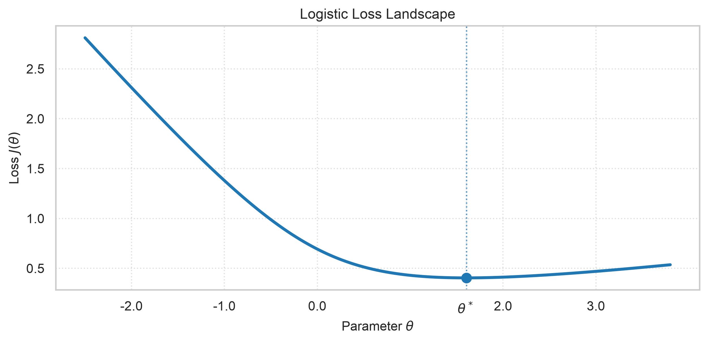
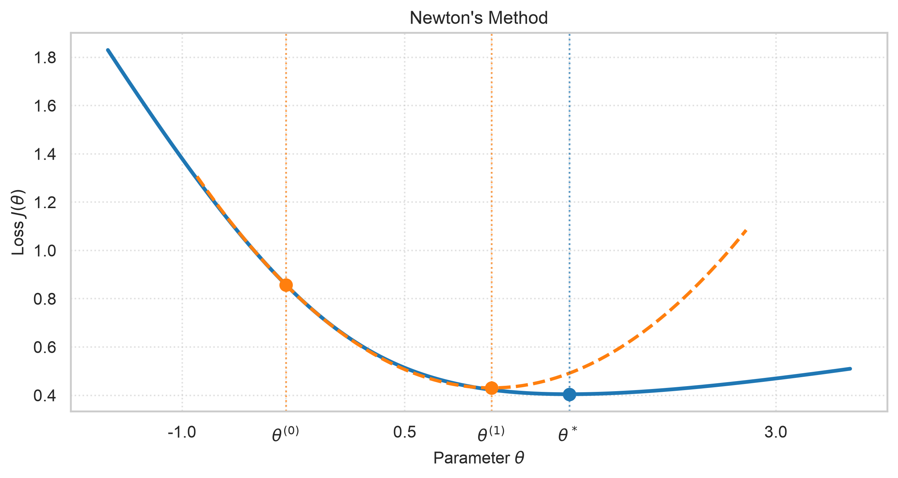
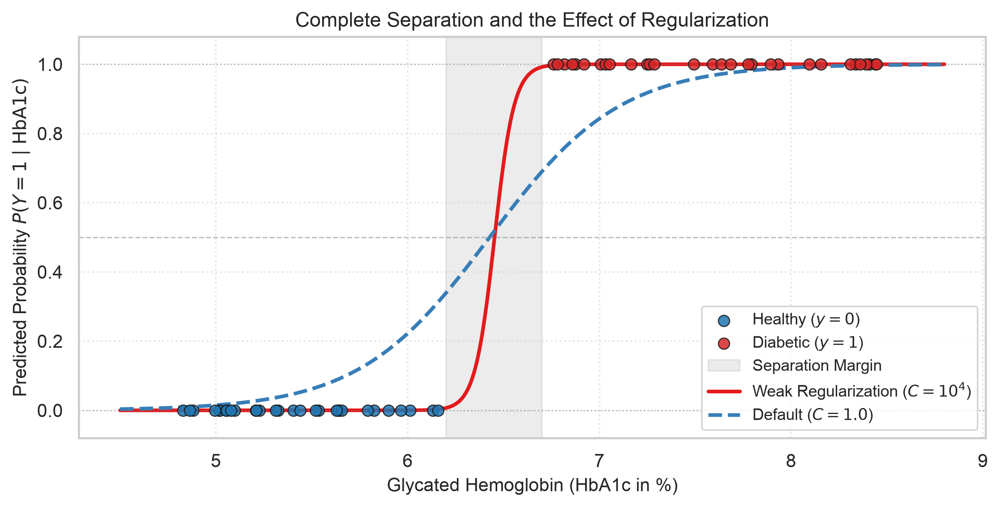

08 Logistic Regression: Computation
Mathematics for Machine Learning (Mathe3)
Iterative Solvers, Gradient Mechanics, and Scikit-Learn
1. The Need for Iterative Solutions
In Linear Regression, we minimize the residual sum of squares by setting the gradient to zero: \[\nabla_\theta \text{RSS}(\theta) = -2 X^T (y - X\theta) = -2 X^T (y - \hat{y}) = 0\]
Because the system is linear in the parameters \(\theta\), we can solve for \(\theta\) analytically.
In Logistic Regression, we minimize the deviance \(D(\theta)\): \[D(\theta) = -2 \sum_{i=1}^n \left[ y_i \ln \hat{y}_i + (1 - y_i) \ln(1 - \hat{y}_i) \right]\]
where \(\hat{y}_i = \sigma(x_i^T \theta) = \frac{1}{1 + e^{-x_i^T \theta}}\). The gradient of the deviance is: \[\nabla_\theta D(\theta) = -2 X^T (y - \hat{y}) = -2 \sum_{i=1}^n (y_i - \hat{y}_i) x_i\]
NoteDerivation: Deviance Gradient via the Chain Rule
For a single observation \((x_i, y_i)\) with linear predictor \(z_i = x_i^T \theta\) and predicted probability \(\hat{y}_i = \sigma(z_i)\), the deviance contribution is: \[D_i(\theta) = -2 \left[ y_i \ln \hat{y}_i + (1 - y_i) \ln(1 - \hat{y}_i) \right]\]
Applying the calculus chain rule: \[\frac{\partial D_i}{\partial \theta} = \frac{\partial D_i}{\partial \hat{y}_i} \cdot \frac{\partial \hat{y}_i}{\partial z_i} \cdot \frac{\partial z_i}{\partial \theta}\]
Evaluating the three factors:
- First factor: \(\frac{\partial D_i}{\partial \hat{y}_i} = -2\left( \frac{y_i}{\hat{y}_i} - \frac{1 - y_i}{1 - \hat{y}_i} \right) = -2\left( \frac{y_i - \hat{y}_i}{\hat{y}_i(1 - \hat{y}_i)} \right) = 2\left( \frac{\hat{y}_i - y_i}{\hat{y}_i(1 - \hat{y}_i)} \right)\)
- Second factor: \(\frac{\partial \hat{y}_i}{\partial z_i} = \sigma'(z_i) = \hat{y}_i(1 - \hat{y}_i)\)
- Third factor: \(\frac{\partial z_i}{\partial \theta} = x_i\)
Combining these factors yields: \[\frac{\partial D_i}{\partial \theta} = -2\left( \frac{y_i - \hat{y}_i}{\hat{y}_i(1 - \hat{y}_i)} \right) \cdot \left[ \hat{y}_i(1 - \hat{y}_i) \right] \cdot x_i = -2 (y_i - \hat{y}_i) x_i \]
Summing across all \(n\) observations yields: \[\nabla_\theta D(\theta) = -2 \sum_{i=1}^n (y_i - \hat{y}_i) x_i = -2 X^T (y - \hat{y})\]
Setting this gradient to zero, we find an equation for the optimal parameters: \[X^T (y - \hat{y}) = 0\]
Notice that the residual error \(y - \hat{y}\) is again orthogonal to all data matrix columns. However, \(\hat{y} = \sigma(X\theta)\) is non-linear in \(\theta\). Therefore, the system cannot be solved analytically for \(\theta\) and we must rely on iterative optimization.
Defining the Loss Function \(J(\theta)\)
To normalize the deviance for the number of samples \(n\) we define the mean loss function \(J(\theta)\). This is the binary cross-entropy and does not grow with the number of samples: \[J(\theta) = \frac{1}{2n} D(\theta) = -\frac{1}{n} \sum_{i=1}^n \left[ y_i \ln \hat{y}_i + (1 - y_i) \ln(1 - \hat{y}_i) \right]\]
1D Non-Linear Logistic Loss Landscape
import numpy as np
import matplotlib.pyplot as plt
# 1D feature and labels: basis function utilized throughout this lecture
x_data = np.array([-2.0, -1.0, -0.2, 0.5, 1.2, 2.2])
y_data = np.array([0, 0, 1, 0, 1, 1])
def sigmoid(z):
return 1.0 / (1.0 + np.exp(-np.clip(z, -25, 25)))
def loss_func(theta_vals):
theta_vals = np.atleast_1d(theta_vals)
p = sigmoid(np.outer(theta_vals, x_data))
return -np.mean(y_data * np.log(p + 1e-12) + (1 - y_data) * np.log(1 - p + 1e-12), axis=1)
theta_grid = np.linspace(-2.5, 3.8, 400)
J_grid = loss_func(theta_grid)
th_star = theta_grid[np.argmin(J_grid)]
J_star = np.min(J_grid)
fig, ax = plt.subplots(figsize=(8.5, 4.2))
ax.plot(theta_grid, J_grid, color='#1f77b4', lw=2.5)
ax.plot(th_star, J_star, 'o', color='#1f77b4', markersize=8)
ax.axvline(th_star, color='#1f77b4', linestyle=':', lw=1.2, alpha=0.7)
# Custom x-tick annotations for theta*
ax.set_xticks([-2.0, -1.0, 0.0, th_star, 2.0, 3.0])
ax.set_xticklabels(['-2.0', '-1.0', '0.0', r'$\theta^*$', '2.0', '3.0'], fontsize=11)
ax.set_xlabel(r'Parameter $\theta$', fontsize=11)
ax.set_ylabel(r'Loss $J(\theta)$', fontsize=11)
ax.set_title("Logistic Loss Landscape", fontsize=12)
ax.grid(True, linestyle=':', alpha=0.6)
plt.tight_layout()
plt.show()
2. Iterative Methods
2.1 Gradient Descent
Although the non-linear problem cannot be solved analytically, we can use iterative solvers. The Gradient Descent update rule with learning rate \(\alpha > 0\) applied to the mean loss \(J(\theta)\) is: \[\theta^{(t+1)} = \theta^{(t)} - \alpha \nabla J(\theta^{(t)}) = \theta^{(t)} - \frac{\alpha}{n} X^T (\hat{y}^{(t)} - y)\]
where \(\hat{y}^{(t)} = \sigma(X\theta^{(t)})\).
First-order derivatives tell us which direction to step, but do not dictate how far to step. Choosing \(\alpha\) requires careful tuning: too small values lead to slow convergence; too large values may cause oscillations or divergence.
2.2 Newton’s Method
Instead of fitting a tangent to a local curve and determining a step size with an ad-hoc learning rate, Newton’s method approximates the loss function by a local parabola at the current estimate of \(\theta^{(t)}\).
1D Newton Method: Local Parabola Fit & Vertex Step
import numpy as np
import matplotlib.pyplot as plt
# 1D feature and labels: identical basis function from Section 1
x_data = np.array([-2.0, -1.0, -0.2, 0.5, 1.2, 2.2])
y_data = np.array([0, 0, 1, 0, 1, 1])
def sigmoid(z):
return 1.0 / (1.0 + np.exp(-np.clip(z, -25, 25)))
def loss_func(theta_vals):
theta_vals = np.atleast_1d(theta_vals)
p = sigmoid(np.outer(theta_vals, x_data))
return -np.mean(y_data * np.log(p + 1e-12) + (1 - y_data) * np.log(1 - p + 1e-12), axis=1)
def grad_func(theta):
p = sigmoid(theta * x_data)
return np.mean((p - y_data) * x_data)
def hess_func(theta):
p = sigmoid(theta * x_data)
return np.mean(p * (1 - p) * (x_data ** 2))
# Grid for plotting curves and identifying the true minimum
theta_grid = np.linspace(-1.5, 3.5, 400)
J_grid = loss_func(theta_grid)
th_star = theta_grid[np.argmin(J_grid)]
J_star = np.min(J_grid)
# Iteration from theta_0 = -0.3
theta_0 = -0.3
J_0 = loss_func(theta_0)[0]
dJ_0 = grad_func(theta_0)
ddJ_0 = hess_func(theta_0)
# Newton step 1: optimal adaptive step alpha_0* = 1 / ddJ_0 to parabola vertex
theta_1 = theta_0 - dJ_0 / ddJ_0
q_vertex = J_0 + dJ_0 * (theta_1 - theta_0) + 0.5 * ddJ_0 * (theta_1 - theta_0)**2
# Full parabola fitted at theta_0: symmetric around vertex theta_1
th_p0 = np.linspace(-0.9, 2.8, 200)
q0 = J_0 + dJ_0 * (th_p0 - theta_0) + 0.5 * ddJ_0 * (th_p0 - theta_0)**2
fig, ax = plt.subplots(figsize=(8.5, 4.6))
# Plot loss and full fitted parabola
ax.plot(theta_grid, J_grid, color='#1f77b4', lw=2.5)
ax.plot(th_p0, q0, '--', color='#ff7f0e', lw=2.2)
# The three key points: orange filled circles for theta_0 and theta_1, blue filled circle for theta*
ax.plot(theta_0, J_0, 'o', color='#ff7f0e', markersize=8)
ax.plot(theta_1, q_vertex, 'o', color='#ff7f0e', markersize=8)
ax.plot(th_star, J_star, 'o', color='#1f77b4', markersize=8)
# Vertical dashed reference lines to x-axis
ax.axvline(theta_0, color='#ff7f0e', linestyle=':', lw=1.2, alpha=0.7)
ax.axvline(theta_1, color='#ff7f0e', linestyle=':', lw=1.2, alpha=0.7)
ax.axvline(th_star, color='#1f77b4', linestyle=':', lw=1.2, alpha=0.7)
# Custom x-tick annotations for theta_0, theta_1, theta*
ax.set_xticks([-1.0, theta_0, 0.5, theta_1, th_star, 3.0])
ax.set_xticklabels(['-1.0', r'$\theta^{(0)}$', '0.5', r'$\theta^{(1)}$', r'$\theta^*$', '3.0'], fontsize=11)
ax.set_xlabel(r'Parameter $\theta$', fontsize=11)
ax.set_ylabel(r'Loss $J(\theta)$', fontsize=11)
ax.set_title("Newton's Method", fontsize=12)
ax.grid(True, linestyle=':', alpha=0.6)
plt.tight_layout()
plt.show()
Solving for the exact minimum of this fitted parabola yields the next estimate, which is hopefully improved: \[\theta^{(t+1)} = \theta^{(t)} - \frac{J'(\theta^{(t)})}{J''(\theta^{(t)})}\]
Comparing this update to gradient descent reveals that Newton’s method provides a curvature-dependent adaptive step size: \[\alpha(t) = \frac{1}{J''(\theta^{(t)})}\]
Where the surface has steep curvature and \(J''\) is large, the step size shrinks to prevent overshooting; where the surface is flat, the step size expands to accelerate convergence.
For the vertex of the fitted parabola to be a local minimum, the second derivative must satisfy \(J''(\theta) > 0\). In logistic regression, \(J''(\theta) > 0\) everywhere, so the objective is strictly convex, ensuring that minimizing the fitted parabola always moves toward the unique global minimum.
2.3 Newton’s Method in Higher Dimensions
When generalizing to \(D\)-dimensional parameter spaces (\(\theta \in \mathbb{R}^D\)), the scalar second derivative \(J''\) amounts to a weighted Hessian matrix: \[H = \nabla^2 J(\theta) = \frac{1}{n} X^T W X\] where \(W = \text{diag}\left( \hat{y}_1(1 - \hat{y}_1), \dots, \hat{y}_n(1 - \hat{y}_n) \right)\) is a diagonal weight matrix of sample variances. Each observation is weighted by its proximity to the decision boundary: observations near \(\hat{y} \approx 0.5\) have maximal variance (\(W_{ii} \approx 0.25\)) and exert the strongest influence on curvature.
The multivariate Newton update rule is: \[\theta^{(t+1)} = \theta^{(t)} - H^{-1} \nabla J(\theta^{(t)})\]
Calculating and inverting the \(D \times D\) Hessian matrix at each iteration is computationally heavy: \(\mathcal{O}(D^3)\).
In practice, \(H^{-1}\) is approximated. One standard implementation is L-BFGS. (1970, 4 independent authors, 4 publications!)
3. Scikit-Learn in Practice
In scikit-learn, LogisticRegression uses solver="lbfgs" by default. Also notce that we can define a maximal number of iterations and a regularization parameter \(C\) (see later).
As is common we should normalize/standardize all features to avoid widely differing magnitudes.
# defne model and raw data
np.random.seed(42)
n = 150
glucose = np.random.uniform(70, 180, n)
bmi = np.random.uniform(18, 42, n)
z_true = -12.0 + 0.07 * glucose + 0.15 * bmi
y = (1.0 / (1.0 + np.exp(-z_true)) > 0.5).astype(int)
X_raw = np.column_stack([glucose, bmi])
# scikit-learn pipeline (incl. scaling)
pipeline = make_pipeline(
StandardScaler(),
LogisticRegression(C=1.0, solver="lbfgs", max_iter=500, random_state=42)
)
pipeline.fit(X_raw, y)
clf = pipeline.named_steps['logisticregression']
print(f"Scikit-Learn Intercept (theta0): {clf.intercept_[0]:.4f}")
print(f"Scikit-Learn Glucose Weight (theta1): {clf.coef_[0, 0]:.4f}")
print(f"Scikit-Learn BMI Weight (theta2): {clf.coef_[0, 1]:.4f}")Scikit-Learn Intercept (theta0): 1.7938
Scikit-Learn Glucose Weight (theta1): 3.8587
Scikit-Learn BMI Weight (theta2): 1.62654. Regularization and Complete Separation
In linear regression, regularization (Ridge or Lasso) is introduced to prevent overfitting.
In logistic regression, regularization serves a second purpose: prevent solver breakdown due to complete separation.
An Example
Suppose the HbA1c (glycated hemoglobin, in %) levels are measured for all patients. The clinical guidelines are as follows: allhealthy patients have \(\text{HbA1c} < 6.5\%\), and all diabetic patients have \(\text{HbA1c} \ge 6.5\%\). This is perfect separation.
What happens when we minimize deviance? The model seeks predicted probabilities that reach their theoretical extremes: \[\hat{y}_i = \sigma(x_i^T \theta) \to 1 \quad \text{for all } y_i = 1\] \[\hat{y}_i = \sigma(x_i^T \theta) \to 0 \quad \text{for all } y_i = 0\]
Because the sigmoid function only approaches 0 and 1 asymptotically, this will force
\[\|\theta\| \to \infty\]
This will trigger numerical overflow (\(\exp(-x_i^T \theta)\)) and optimizer failure.
As before, this can be regularized by a penalty term in the loss function that will prevent large weights:
\[J_{\text{reg}}(\theta) = J(\theta) + \frac{1}{2C} \|\theta\|^2\]
In scikit-learn, LogisticRegression applies an \(L_2\) penalty by default with \(C=1.0\)
Complete Separation and Regularization
import numpy as np
import matplotlib.pyplot as plt
from sklearn.linear_model import LogisticRegression
# Synthetic clinical cohort perfectly separated by HbA1c (%)
np.random.seed(42)
n_healthy, n_diabetic = 30, 30
hba1c_healthy = np.random.uniform(4.8, 6.2, n_healthy)
hba1c_diabetic = np.random.uniform(6.7, 8.5, n_diabetic)
X = np.concatenate([hba1c_healthy, hba1c_diabetic]).reshape(-1, 1)
y = np.concatenate([np.zeros(n_healthy), np.ones(n_diabetic)])
# Fit Logistic Regression models with varying C (L2 default)
clf_weak = LogisticRegression(C=1e4, solver="lbfgs", max_iter=1000).fit(X, y)
clf_default = LogisticRegression(C=1.0, solver="lbfgs", max_iter=1000).fit(X, y)
x_grid = np.linspace(4.5, 8.8, 500).reshape(-1, 1)
fig, ax = plt.subplots(figsize=(8.5, 4.4))
# Plot observations (in front of curves)
ax.scatter(hba1c_healthy, np.zeros_like(hba1c_healthy), color='#1f77b4', s=45, alpha=0.85, edgecolors='k', linewidths=0.7, label='Healthy ($y=0$)', zorder=3)
ax.scatter(hba1c_diabetic, np.ones_like(hba1c_diabetic), color='#d62728', s=45, alpha=0.85, edgecolors='k', linewidths=0.7, label='Diabetic ($y=1$)', zorder=3)
# Separation margin band
ax.axvspan(6.2, 6.7, color='gray', alpha=0.15, label='Separation Margin', zorder=0)
# Sigmoid curves across regularization strengths
ax.plot(x_grid, clf_weak.predict_proba(x_grid)[:, 1], color='#e41a1c', lw=2.2, linestyle='-',
label=r'Weak Regularization ($C = 10^4$)', zorder=2)
ax.plot(x_grid, clf_default.predict_proba(x_grid)[:, 1], color='#377eb8', lw=2.2, linestyle='--',
label=r'Default ($C = 1.0$)', zorder=2)
ax.set_xlabel('Glycated Hemoglobin (HbA1c in %)', fontsize=11)
ax.set_ylabel(r'Predicted Probability $P(Y = 1 \mid \text{HbA1c})$', fontsize=11)
ax.set_title("Complete Separation and the Effect of Regularization", fontsize=12)
ax.set_ylim(-0.08, 1.08)
ax.axhline(0, color='gray', linestyle=':', lw=0.8, alpha=0.5)
ax.axhline(0.5, color='gray', linestyle='--', lw=0.8, alpha=0.5)
ax.axhline(1, color='gray', linestyle=':', lw=0.8, alpha=0.5)
ax.legend(loc='lower right', frameon=True, fontsize=9.5)
ax.grid(True, linestyle=':', alpha=0.5)
plt.tight_layout()
plt.show()